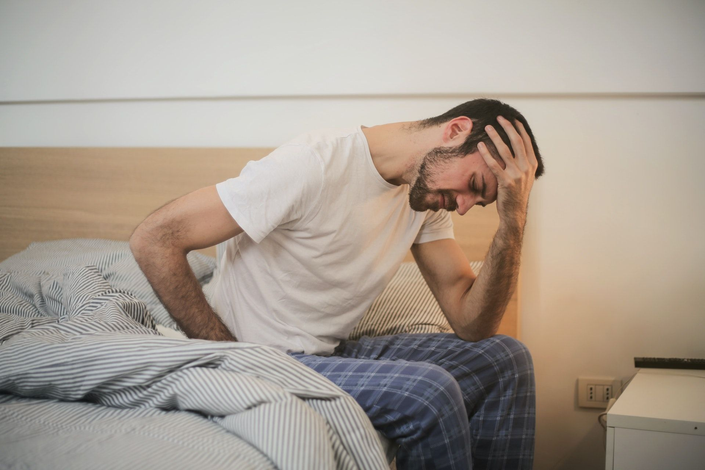

Health
30/06/2020


Consejos y cuidados para la salud de la próstata
Uno de los tesoros más preciados de un hombre, sin duda alguna, es la próstata. Ese diamante en bruto, situado entre la vejiga y la uretra, que se mantiene fuerte durante años, tiene dos grandes enemigos: el cáncer y el tiempo. A partir de los 50, esta glándula del tamaño de una nuez empieza a deteriorarse y a agrandarse.
Contrariamente a la salud sexual de la mujer, parece ser que el tema próstata es más bien un tema de broma o burla. Suele ser más habitual ver a una mujer hacerse revisiones ginecológicas rutinarias que a un hombre, y solo vaya cuando existan síntomas evidentes y graves.
Sin embargo, es importante tener en cuenta que la próstata, encargada de producir el fluido seminal el cual ayuda al esperma a moverse por la uretra, puede sufrir tres afecciones bastante comunes: la hiperplasia benigna de próstata (HBP), la prostatitis y el cáncer de próstata. Este último es la tercera causa de mortalidad entre hombres, después del cáncer de pulmón y el de colon.
Alteraciones en la próstata
- La hiperplasia benigna es un crecimiento de la próstata, pasando del tamaño de una nuez al de un limón. Ese agrandamiento provoca problemas en la uretra, oprimiéndola y dificultando el vaciado de la vejiga cuando se orina.
- La prostatitis es una inflamación de la glándula. A pesar de que muchas veces se asocia con una enfermedad de transmisión sexual, también puede ser provocado por una infección de orina o un trastorno de origen desconocido. Los síntomas son parecidos a los de la hiperplasia pero con la diferencia de sufrir malestar general, fiebre, molestias en la zona genital, dolor al orinar, etc.
- El cáncer de próstata es de desarrollo lento y los síntomas pueden confundirse también con los de la hiperplasia. Además, otras consecuencias es la pérdida de apetito, bajada de peso, dolores lumbares y de huesos. Como la próstata no se ve y es difícil de detectar, es mejor hacerse revisiones periódicas, a partir de una edad, para descartar cualquier tipo de alteración.
Dicho esto, vemos que la salud de la próstata no es un juego y ese tesoro que nos ha acompañado durante tanto tiempo, dándonos muchas alegrías, hay que mimarlo. Por eso, vamos a dejaros una lista de consejos para que esta joya de la corona siga reluciente aunque pasen los años.
Consejos para el cuidado
- Dieta equilibrada: seguir una dieta equilibrada es vital para evitar o reducir la aparición de cualquier tipo de enfermedad. En el caso de la próstata y en la medida de lo posible, es vital reducir el consumo del picante, el exceso de alcohol, las bebidas con cafeína, las grasas saturadas y los zumos de cítricos.
- Ejercicio: como siempre, el ejercicio, obligatoriamente, tiene que formar parte de nuestra vida diaria. Sin embargo, para los amantes de las rutas en bici, los especialistas recomiendan que a cierta edad es mejor reducir su práctica, ya que favorece la aparición de este tipo de alteraciones en la próstata.
- Temperaturas: los cambios bruscos de temperatura o los baños de agua fría son grandes enemigos de esta glándula.
- Revisiones periódicas: como hemos comentado anteriormente, a partir de una edad (entre los 40 y 50), las revisiones periódicas son recomendables para detectar con antelación cualquier tipo de anomalía.
- Toma de suplementos vitamínicos: aunque no está probado científicamente, se dice que la vitamina C, B6, D, E; el té verde; el trébol rojo; el zinc, el polvo de ajo, etc. ayudan a reducir o retrasar los trastornos que pueda sufrir la próstata.
- Vida sexual: el sexo, sin duda, es uno de los mejores remedios naturales para seguir con una próstata cuidada y sana.
Foto portada de Andrea Piacquadio en Pexels